— An interview with Qian Tiantian, cinematographer of Holding a Winning Hand
Bai Sheng (played by Deng Chao), a veteran employee at a tech firm, is pulled into an office crisis. He is about to receive eight million in stock options, but the company lays him off for no clear reason. To defend his rights, he teams up with others to break the deadlock. What waits for him is a much larger spiral of mystery.
The new film Holding a Winning Hand, directed by Liu Xunzimo and starring Deng Chao, is now in theaters nationwide. This office fantasy of the year chose the new Sony Cinema Line camera, the CineAltaB, as one of its main cameras.
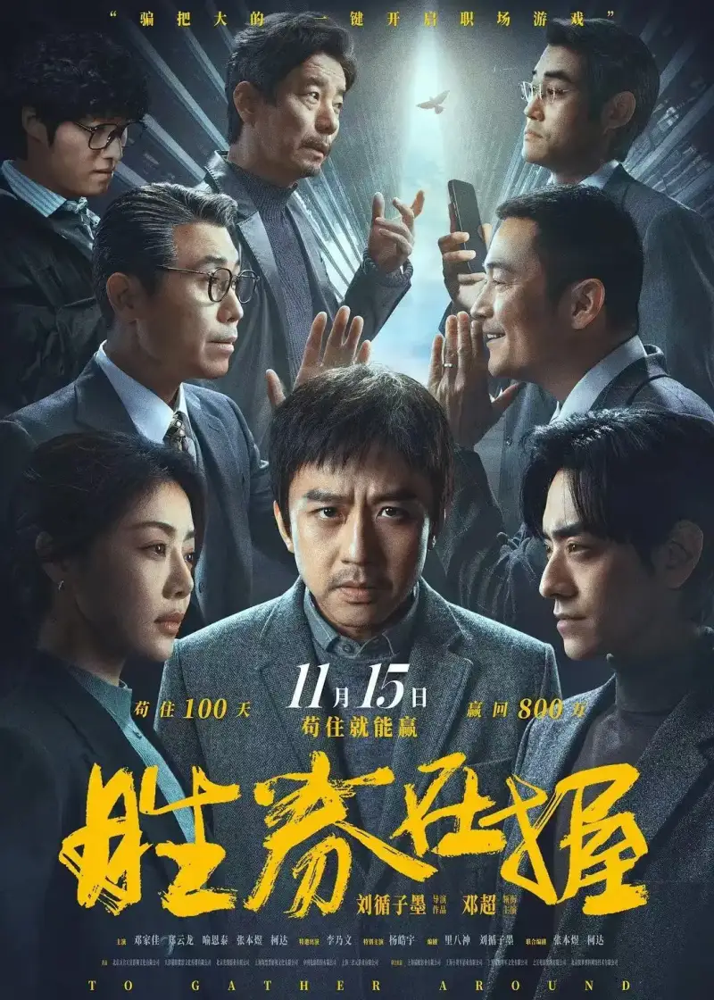
Holding a Winning Hand movie poster
The CineAltaB, released in 2024, is a lightweight 8K cinema camera that combines Sony high-end cinema technology with new smart features. How did it perform on this theatrical film? We interviewed Qian Tiantian, who won Best Cinematography at the 37th Golden Rooster Awards, to hear her real experience and the stories behind the scenes.
Cinematographer · Qian Tiantian
She is a woman who graduated from the Cinematography Department of the Beijing Film Academy. She is a board member of CNSC, the Chinese Society of Cinematographers.
She worked on films such as Back to 1942, My Dear Liar, and A Little Red Flower. She began as cinematographer on Albert Peng film Post Truth. She then shot One and Only and I Am Nobody. She just won Best Cinematography at the 37th Golden Rooster Awards for One and Only, together with Zhong Rui.
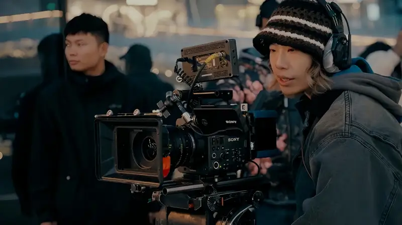
On-set photo of cinematographer Qian Tiantian
Q: How did you become a film cinematographer?
Qian Tiantian: When I graduated from the Beijing Film Academy, I got internships on film sets. Besides cinematography, I worked as a screenwriter, an editor, and an assistant director. But I found that only when I shot did I have endless enthusiasm and patience. I was also lucky to get work in the camera department. So I became a film cinematographer without looking back.
Q: What made you decide to join this project?
Qian Tiantian: Before I met the director Liu Xunzimo, I was hesitant to take the film. I know little about office life, and I am not good at complex relationships. But after we talked, I found that the story, like the director himself, looks complex on the surface but is warm and loving underneath. I choose films as a film fan. I believed this movie would give audiences warmth and the courage to face life. So I joined.
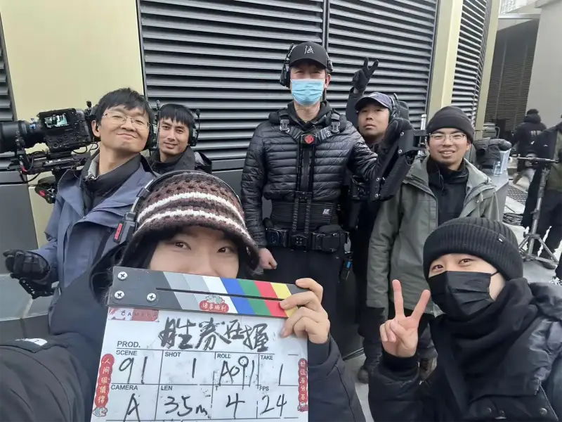
Behind the scenes of Holding a Winning Hand
Q: What is the visual style of the film? Did the director set specific requirements?
Qian Tiantian: The special thing about this film is that, although the office setting is familiar, it works more like a modern fable. Director Liu Xunzimo wanted the story to take place in a stylized, almost unreal space. Interestingly, we found a real campus in Shanghai that matched our vision, even more extreme than we expected. Shanghai really lives up to its name as the magic city.
Liu Xunzimo is a director with a fully formed aesthetic. The mood he wanted was clear: a large oppressive company with no daylight, and warm friends you discover were beside you all along. Following that, I and the production designer Li Anran found the style of the film easily. We no longer limited ourselves to the office setting. Our visual references even included sci-fi and gangster films. After we wrapped, I realized the 1967 film Play Time had a very similar surreal mood. It struck me that after 60 years, people still have not escaped the cold cage of concrete and steel.

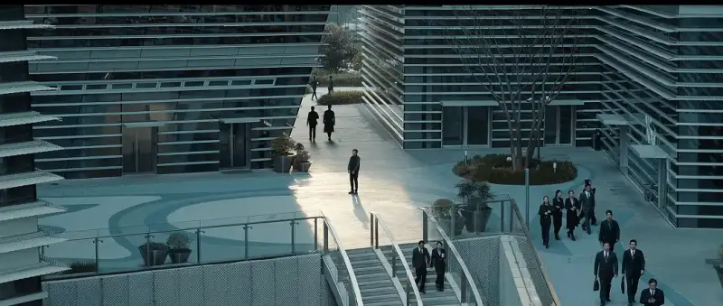
Still from Holding a Winning Hand
Q: How did you staff your camera team?
Qian Tiantian: My working habit is to let the camera follow the actors. So the number of cameras depends on how many relationships are on screen in group scenes. Although we often had more than a dozen actors, we used at most three cameras, and mostly two. Because the main set was large, and to keep the actors full blocking intact, we often mounted all the cameras on a jib or a Steadicam.
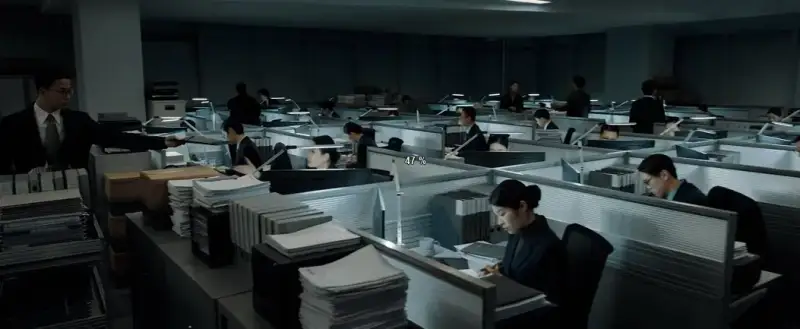
Still from Holding a Winning Hand
Q: How did you choose the camera and lenses for this film?
Qian Tiantian: At first we planned to shoot everything in anamorphic widescreen to show the oppressive feel of the big company. We chose the retro yet light P+S Technovision 1.5X anamorphic lens. It has a strong optical character, but the center is still sharp. However, for some studio composite shots, the stylized anamorphic look would hurt the composite. So for most interiors we used ARRI Signature Primes. They have strong optical specs and a full range of focal lengths, so they are always a safe choice.
Choosing the camera was much easier. The Sony CineAltaB had just been released. The moment I picked it up at the launch event, I knew it was the one.
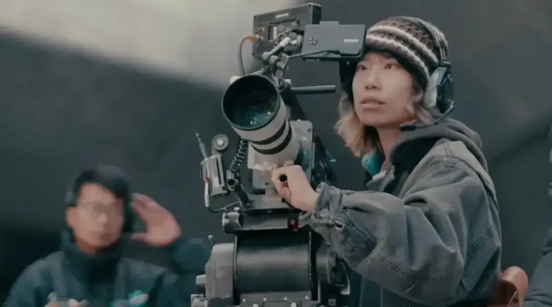
Cinematographer Qian Tiantian shoots with the CineAltaB
Q: After your testing, which features of the CineAltaB and the performance made you choose it for this film？How did they help you achieve your creative goals?
Qian Tiantian: This time I shot many city night scenes directly at ISO 3200. In a place like Shanghai, it even captured the density of the late-night sky. For the night scenes in this film, I did not need to add many lights. More often, I controlled the lighting ratio by turning lights off.
Another feature that drew me was the stepless ND filter. The actors move between indoors and outdoors, so the focus puller no longer had to balance the two by changing the aperture.
Light cameras have always suited me. For me, the less the camera is felt, the better I can capture the inner world of the actors. As a female cinematographer, I value flexible, easy-to-use gear. The CineAltaB fits that need and lets me work more freely. In group scenes with several veteran actors, a single take could run 3 to 5 minutes without a stop. The light CineAltaB made the Steadicam less tiring, so I truly traveled light and could focus on the artistic expression of the shot.
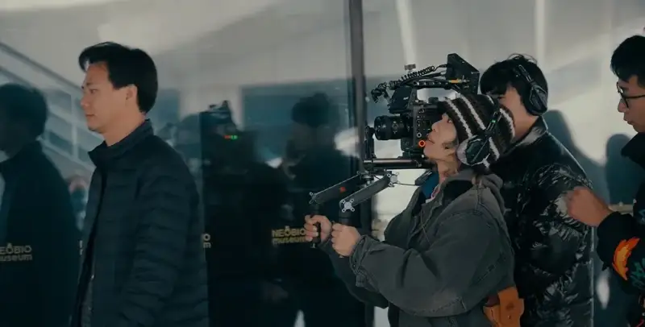
Cinematographer Qian Tiantian shoots with the CineAltaB
Another small surprise was the in-body stabilization. With it on in a shoulder-mounted position, the look sits between Steadicam and handheld. It feels a bit more emotional than pure Steadicam, but does not make the audience dizzy.
Autofocus is another standout point. This was the first time the feature was brought up to a full-size cinema camera. I mainly used AF for cutaway shots and B-roll. I did not use it much, but it really saved crew, which suits the needs of a small, flexible unit.
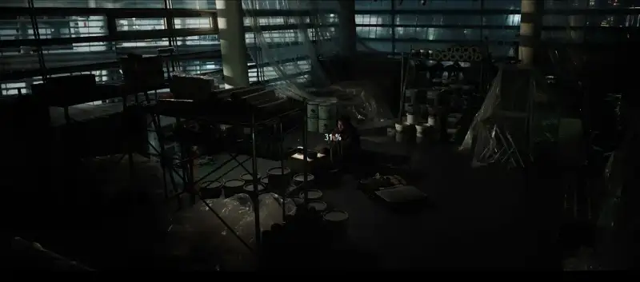
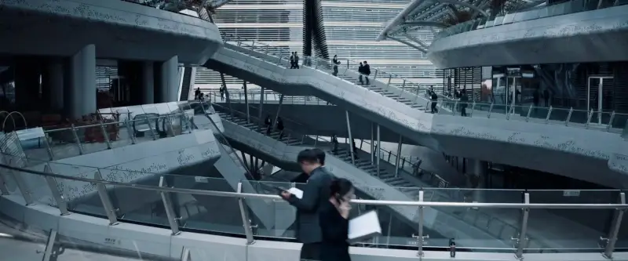
Still from Holding a Winning Hand
Q: You named the native ISO 3200 feature first. What role did it play in shooting this film?
Qian Tiantian: During location scouting, I worried about how to use the real light sources of the city. Our sets included many views outside office windows, and also scenes with no light after a power cut. With the CineAltaB, the native ISO 3200 is what let me make bold choices about the mood of the scenes.
For example, we had two scenes with no added light. One shows Bai Sheng, to save rent, living on an empty floor of the company still under renovation. When we scouted it, the building opposite was a real internet company lit up late at night. With the high sensitivity, what the eye saw was what we got. The whole scene used only one small clip light.

Still from Holding a Winning Hand
The other is Zhou Wanggao on a phone call with his father by the window. The whole frame was lit only by the city night light outside. At first this scene was set in an indoor corridor. But one night while shooting city cutaways, I noticed that ISO 3200 could catch the subtle shift of city lights on a face. That is how this shot came about.
High sensitivity did not only improve the technical result. It also changed how I shaped light. Because I could use real light sources, the mood felt more real and the light more alive. Often I got unexpected happy surprises.
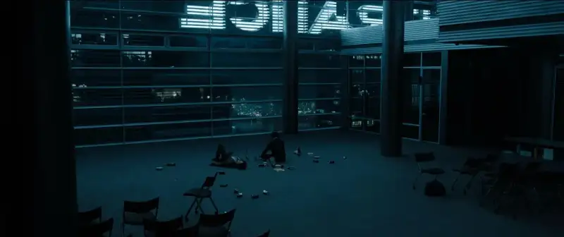
On-set photo of cinematographer Qian Tiantian
Q: What did you learn about controlling exposure during the shoot?
Qian Tiantian: I thank the strict training of the cinematography department in the film era. We aimed to print the whole film from one light stop. So even now in the DI stage, I rarely adjust exposure. But that strict rule just means relying on a light meter.
Today the wide latitude and exposure aids free the photographer. You no longer worry about whether the base light is enough, or whether a local source will blow out. Even outdoors with poor monitoring, once you set an EV value, exposure is no longer a technical barrier. But one caution: on set we had not only the CineAltaB but also the CineAltaV 2 and the FX3, and their exposure values differ. If you mix cameras, you must test them in the rehearsal stage and learn their character. Or give each camera a custom LUT to bridge the difference, so multi-camera exposure stays consistent.

Still from Holding a Winning Hand
Q: In a few sentences, sum up the CineAltaBimpression the CineAltaB left you on this shoot
Qian Tiantian: A camera is a tool for expression, and the best tool is the one that feels like part of your hand. The CineAltaB is a friendly camera. It is light, simple, and clear, with enough performance for many situations. It is also honest. The body and a lens really cover the basic shoot, instead of being a so-called modular camera that needs a pile of external accessories. That makes me want to take it alone and shoot a documentary.
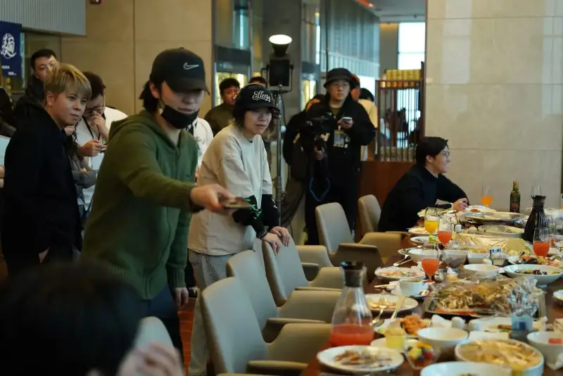
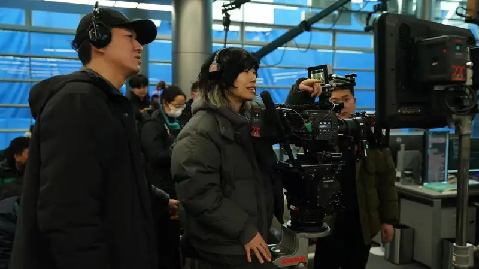
Behind the scenes of Holding a Winning Hand
Q: One last question. For women who also want to become cinematographers, what can you share?
Qian Tiantian: Love life, accept change, stay calm, and move forward bravely.
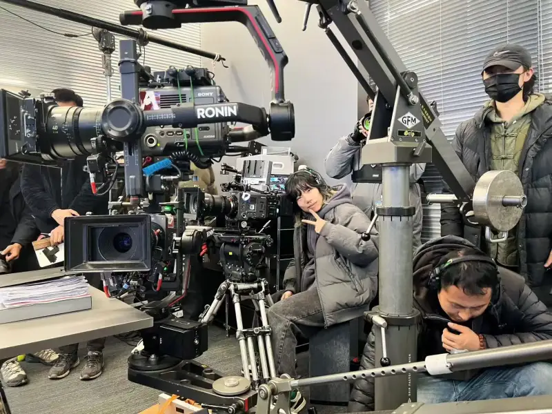
On-set photo of cinematographer Qian Tiantian
The strong performance of the CineAltaB on Holding a Winning Hand let the creative team hold a winning hand, and let the cinematographer vision land firmly. With its high sensitivity, color reproduction, light weight, and stability, the camera gave the film both visual impact and emotional depth, and a unique experience for the audience. In the future it will remain a reliable choice for film and video, and add more winning chances to the art of the moving image.
About the Sony CineAlta camera system
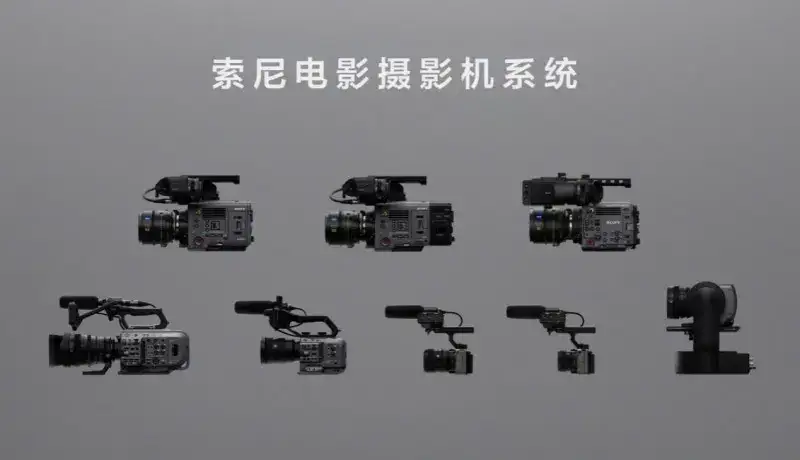
Sony CineAlta camera system
Sony works to reproduce the creator intent faithfully through innovative technology. Drawing on deep experience in film and video, Sony offers a rich, efficient creative camera system to meet the needs of high-quality filmmaking. The Sony CineAlta system centers on the CineAlta series. It includes the widely praised digital cinema cameras CineAltaV, CineAltaV 2, and CineAltaB. It also includes the full-frame FX9 popular for documentaries and TV drama, the full-frame PTZ camera FR7, the flexible FX6, the compact FX3, and the FX30, the first cinema camera for many young people. The CineAltaB was made for diverse film and video work. It broadens the Sony system and gives creators more room to imagine. Sony also offers Crystal LED black crystal screens with high contrast and rich color, plus virtual production tools, to improve the workflow and raise the creative freedom of filmmakers.